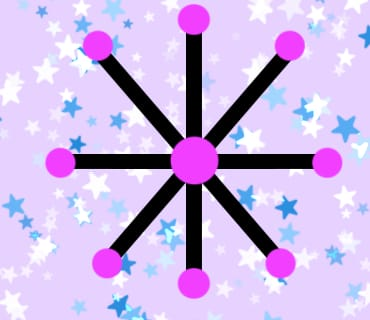
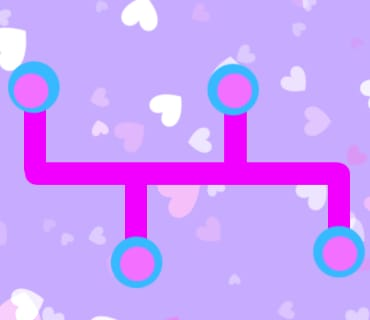
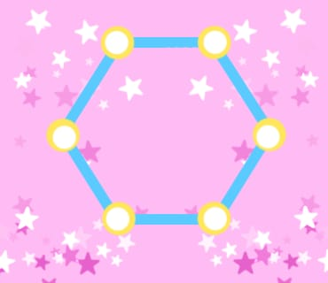
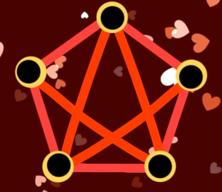
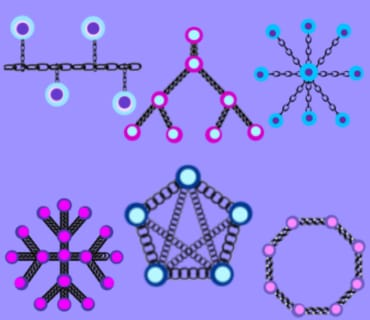
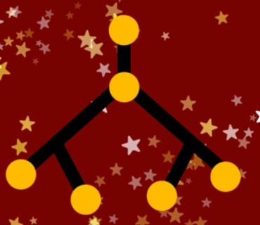

| Tipos de Topologia | Definición | Imagen |
|---|---|---|
| Topología en estrella | Todos los dispositivos están conectados a un nodo central (como un switch o un hub). Es fácil de instalar y gestionar, pero si el nodo central falla, toda la red se cae. |  |
| Topología en bus | Todos los dispositivos están conectados a un único cable central. Es económica y fácil de implementar, pero difícil de solucionar problemas y no es escalable. |  |
| Topología en anillo | Los dispositivos están conectados en un bucle cerrado. Cada dispositivo tiene exactamente dos vecinos. Si un dispositivo falla, puede afectar toda la red, aunque algunos usan anillos redundantes para mayor confiabilidad. |  |
| Topología en malla | Cada dispositivo está conectado a todos los demás. Es muy robusta ya que múltiples rutas pueden existir entre los dispositivos, pero es costosa y compleja de instalar. |  |
| Topología híbrida | Combinación de dos o más topologías. Es flexible y escalable, pero también puede ser compleja y costosa. |  |
| Topología de árbol | Combina estrella y bus. Estructura jerárquica con un nodo raíz, nodos intermedios y nodos hoja. Escalable y fácil de gestionar, pero fallos en nodos intermedios pueden desconectar ramas enteras. |  |